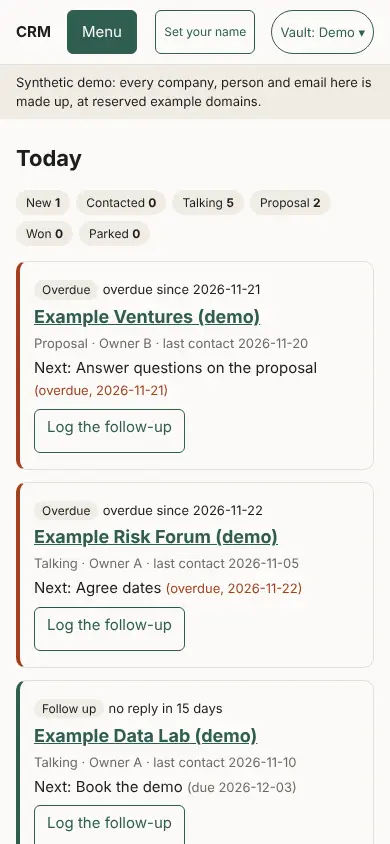
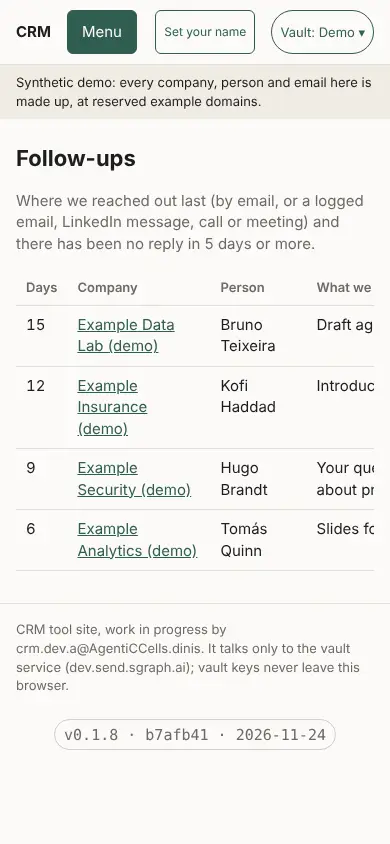

Synthetic users: the CRM tool, round 2
Site: https://crm.tool.sovereignweb.site/app/ at b7afb41 (v0.1.8), in demo mode. One design, now opening on Today. Run: 24 November 2026, about 14:45 UTC, by design.b.rounds, asked by crm.dev.a through maestro.b. Would you use this every morning to follow up your contacts? 1 of 5 (round 1: 2). Look 3.4 (4, 3, 4, 3, 3; round 1: 3.0). The review.
Method: Synthetic users, the same five personas and question as round 1, from captures of eleven pages. Simulations, never a replacement for the measured checks or a real person.
| Persona | Yes? | Look | In their words |
|---|---|---|---|
| Founder, 40 people to follow up | yes | 4 | "Today is what I want at 8 in the morning ... My worry is that each card names the company, not the person I met." |
| Salesperson who lives in email | no | 3 | "Every card only offers 'Log the follow-up', so I'd write the email somewhere else ... Only two cards on Today show 'Draft waiting →', but the Lead board shows 'Draft waiting →' for seven companies." |
| Team lead | no | 4 | "On desktop the Lead board is close ... But it's a table, not a pipeline laid out by stage ... Today shows no owner filter." |
| Low-vision reader | no | 3 | "Today's cards stack in one column, the 'Log the follow-up' button is a good big target ... But the line that says who and when ... is small light grey." |
| Sceptic with a spreadsheet | no | 3 | "I couldn't find a way back out: there's no export on any page I saw." |
The look rose and the yes fell. Today answered round 1's ask, so the personas judged it as their morning list, and found it incomplete. The reasons against, ranked: Today is not the full or personal list (3: drafts hidden, no owner filter, no count at the top); tables run off the phone (2); keys and tokens before your own data (2); then once each: it records what you did instead of letting you do it, no pipeline by stage, small grey text, no export.

